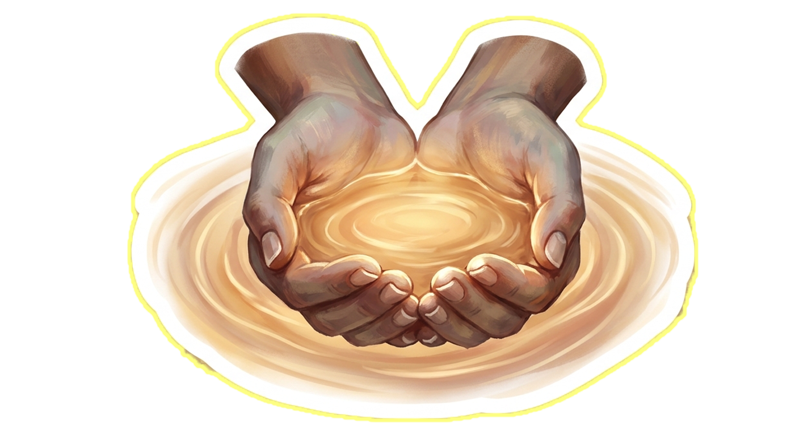
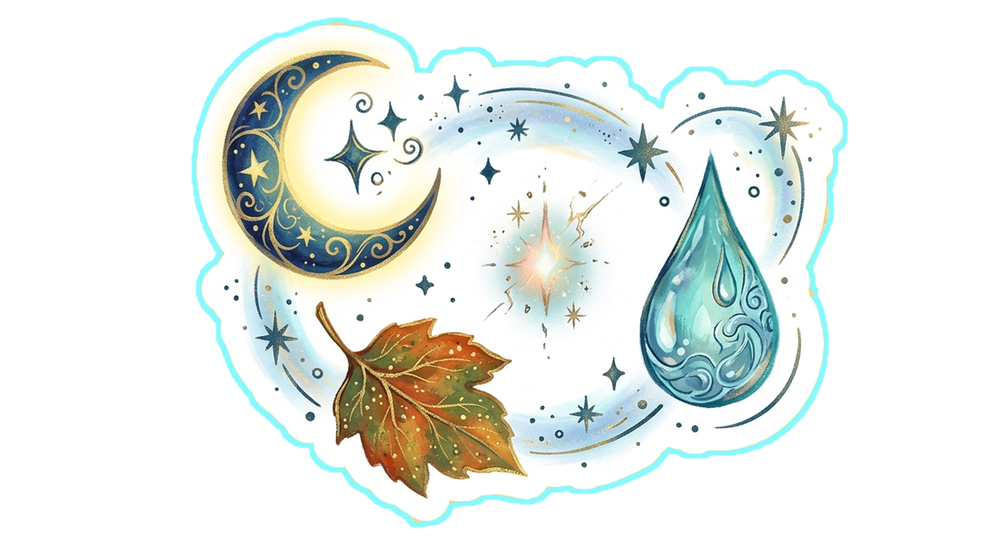

Every person carries emotional textures,
atmospheres, memories, symbols,
and ways of experiencing existence.
This space exists to honor that.
People do not open up through pressure.
They open through:
emotional safety,
atmosphere,
curiosity,
playfulness,
beauty,
and gentle presence.
Instead of extracting information,
this experience invites reflection.

Calm spacing. Gentle movement. Emotional breathing room.
Interfaces should guide, not overwhelm.
Identity is more than categories. It is atmosphere, emotion, symbolism, rhythm and feeling.
Symbols speak before words do.
A moon.
A forest.
Neon light.
Rain.
Circuitry.
Ocean waves.
Butterflies.
Architecture.
Clouds.
Gold light.
People often reveal themselves
emotionally through the worlds
they are drawn toward.

There is no correct way to exist here.
This experience was designed
with emotional gentleness in mind.
No harsh pressure.
No forced identity.
No overwhelming complexity.
Just space to unfold naturally.
This isn't a sales page. It's a real process, laid out plainly.
You'll answer a series of gentle prompts in
The Journey — not a form, more like
a conversation with yourself. Your atmosphere, your
symbols, your color, your words.
From what you share, a one-page visual world is
created for you — one free graphic,
genuinely free, no card required, no catch.
You'll receive it by email. That's the moment you
decide, with nothing owed either way. If it moved
you, and you want a full personalized website built
around it, that becomes its own conversation — a
separate, paid next step. If it didn't move you, or
the timing isn't right, that's completely fine too.
Nothing here expects anything back.
The experience is bigger than one website.
Every person who passes through this space carries
something worth seeing — and over time, this is
growing into a living library of neurodivergent minds.
Not labels. Not diagnoses. Perspectives, kept connected
to the people who created them.
The full reasoning behind World Within — why it exists,
what it refuses to do, and why this matters — lives in
one place.
Your inner world deserves form.
What begins here as a gentle exploration can become something you can see, share, build upon, and carry forward. Continue into the guided emotional journey.
Enter The Experience